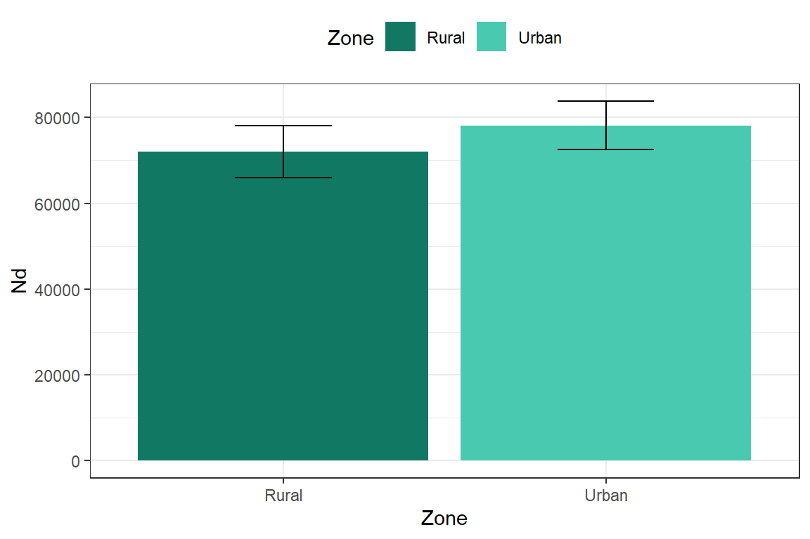
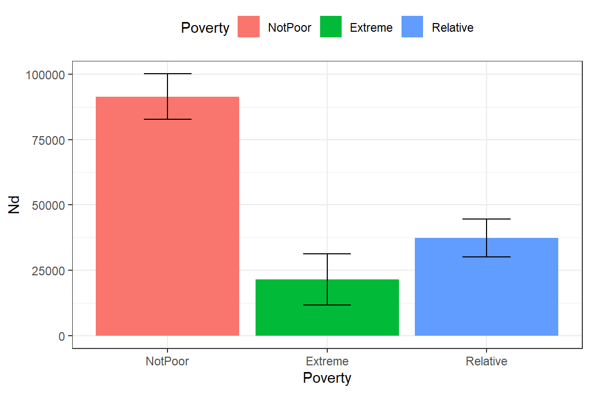
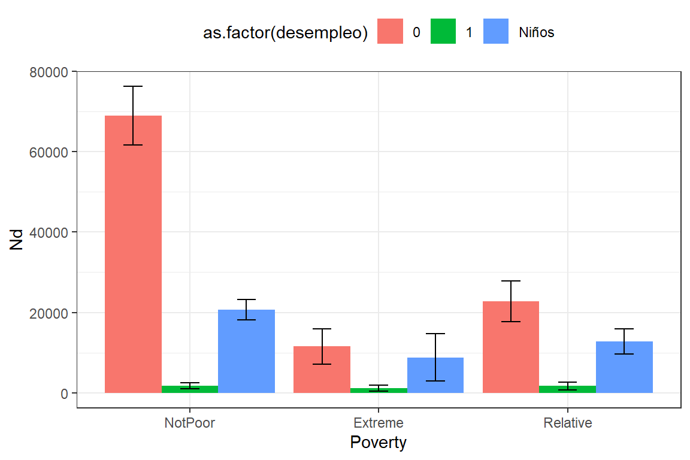
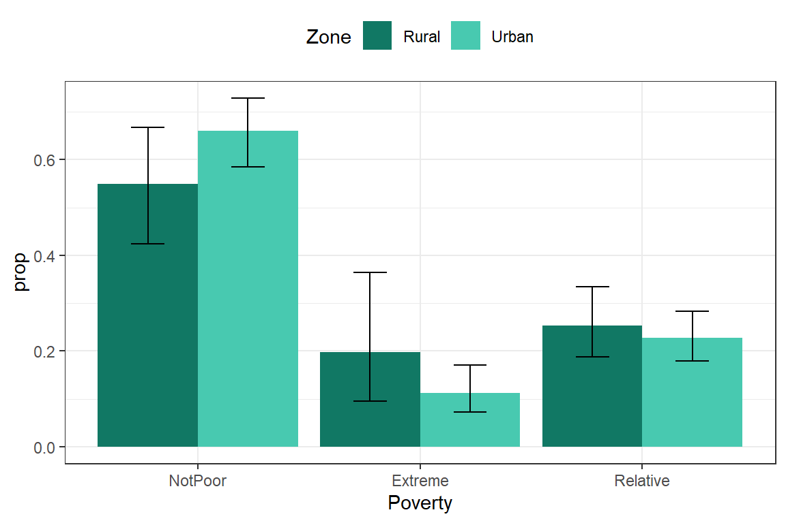
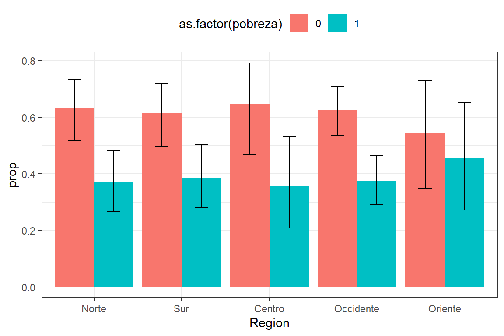
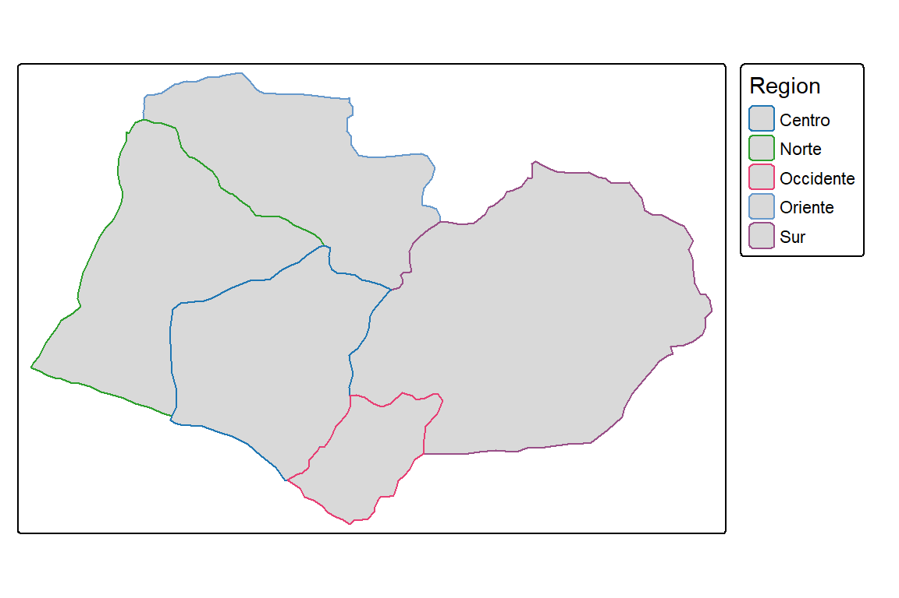
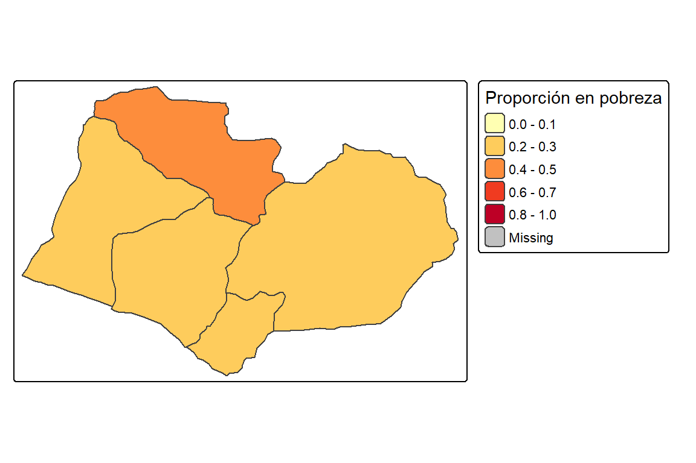
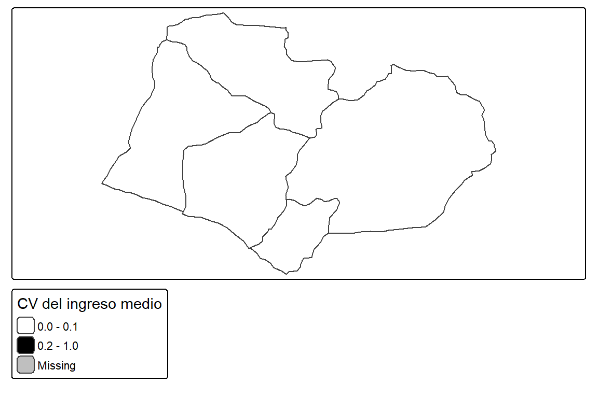
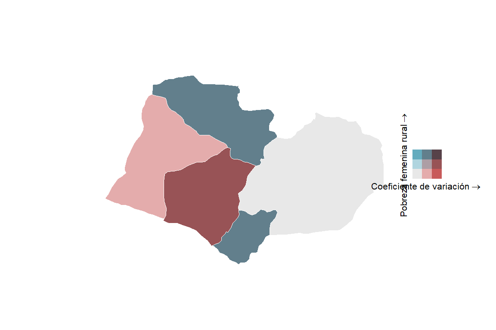

Capítulo 5 Análisis de variables categóricas
En el análisis de encuestas de hogares, uno de los productos más habituales es la estimación de parámetros descriptivos asociados a variables categóricas, los cuales permiten sintetizar las principales características de la población. Estas medidas facilitan una representación clara y comprensible de fenómenos sociales a partir de información recolectada mediante muestras probabilísticas.
La identificación de variables categóricas es fundamental, aunque no siempre es una tarea sencilla. Existen variables que, aun siendo originalmente cuantitativas, pueden transformarse en categorías según el objetivo analítico. Por ejemplo, la edad puede agruparse en intervalos para su análisis categórico en encuestas. En Colombia se emplean rangos como Adolescencia (12–18 años), Juventud (14–26 años), Adultez (27–59 años) y Persona Mayor (60+ años), lo cual permite estudiar características asociadas al curso de vida.
Por otro lado, algunas variables categóricas pueden convertirse en indicadores numéricos mediante técnicas específicas, como el análisis de correspondencias o la construcción de índices compuestos (por ejemplo, el índice de fuerza laboral). Sin embargo, el enfoque de este capítulo se centra en el tratamiento directo de variables categóricas, las cuales son especialmente frecuentes en encuestas de hogares: sexo, parentesco, jefatura del hogar, acceso a servicios, condición de empleo, entre otras.
Entre los resultados descriptivos más utilizados para analizar variables categóricas se encuentran las frecuencias, los totales y las proporciones. Las frecuencias indican cuántas personas u hogares pertenecen a cada categoría, por ejemplo, el número de personas en condición de pobreza; los totales permiten estimar aspectos como el total de los ingresos; y las proporciones expresan el peso relativo de cada categoría dentro del conjunto poblacional.
Aunque el análisis descriptivo de variables categóricas suele apoyarse en estos parámetros básicos, también es posible combinarlas con medidas derivadas de variables numéricas, como cuantiles o indicadores de desigualdad, las cuales se abordan en detalle en el Capítulo 4. No obstante, en este capítulo nos concentraremos exclusivamente en la descripción y estimación de parámetros asociados a variables categóricas, empleando diseños muestrales complejos.
Definición del diseño y creación de variables categóricas
El análisis comienza con el ajuste del diseño muestral, siguiendo los lineamientos explicados en capítulos anteriores y utilizando la misma base de datos. Posteriormente, se generan algunas variables categóricas derivadas de información original de la encuesta, necesarias para los ejercicios de este capítulo. Una de ellas indica si la persona se encuentra o no en condición de pobreza:
library(survey)
library(srvyr)
options(survey.lonely.psu = "adjust")
diseno <- encuesta %>%
as_survey_design(strata = Stratum,
ids = PSU,
weights = wk,
nest = TRUE)A continuación, se construyen otras variables categóricas de interés analítico:
diseno <- diseno %>%
mutate(pobreza = ifelse(Poverty != "NotPoor", 1, 0),
desempleo = ifelse(Employment == "Unemployed", 1, 0),
edad_18 = case_when(Age < 18 ~ "< 18 anios",
TRUE ~ ">= 18 anios"))Como se pudo observar en el código anterior, se ha introducido la función case_when() la cual es una extensión del a función ifelse() que permite crear múltiples categorías a partir de una o varias condiciones.
En muchas aplicaciones, es necesario generar subgrupos de la población para realizar estimaciones desagregadas. En este capítulo se emplean cuatro subpoblaciones de ejemplo:
sub_Urbano <- diseno %>% filter(Zone == "Urban")
sub_Rural <- diseno %>% filter(Zone == "Rural")
sub_Mujer <- diseno %>% filter(Sex == "Female")
sub_Hombre <- diseno %>% filter(Sex == "Male")5.1 Estimación del tamaño poblacional
En el análisis de encuestas de hogares, es fundamental estimar el tamaño de las subpoblaciones, entendido como el número de personas u hogares que pertenecen a categorías específicas y la proporción que representan dentro del total poblacional. Estas estimaciones, basadas en variables categóricas, permiten caracterizar el perfil demográfico y socioeconómico de la población, información clave para orientar la asignación de recursos, diseñar políticas públicas y formular programas sociales.
Conocer cuántas personas se encuentran por debajo de la línea de pobreza, cuántas están desempleadas o cuántas alcanzaron determinado nivel educativo es esencial para identificar brechas y evaluar condiciones de bienestar. El análisis de cómo se distribuyen los individuos entre distintas categorías aporta evidencia para avanzar hacia un desarrollo más equitativo.
La estimación del tamaño de una población o subpoblación se realiza a partir de variables categóricas, que segmentan a la población en grupos mutuamente excluyentes. Estas categorías pueden corresponder, por ejemplo, a quintiles de ingreso, estados de ocupación o niveles educativos alcanzados. El tamaño poblacional hace referencia al número total de individuos u hogares que, en la base de datos de la encuesta, pertenecen a una categoría determinada. Para obtener estas estimaciones, se combinan las respuestas de los encuestados con los pesos muestrales, que indican cuántas personas u hogares representa cada unidad de la muestra dentro de la población total.
El estimador del tamaño de la población se define como:
\[\hat{N} = \sum_{h=1}^{H} \sum_{i \in s_{1h}} \sum_{k \in s_{hi}} w_{hik},\]
donde \(s_{hi}\) corresponde a la muestra de hogares o individuos en la UPM \(i\) del estrato \(h\); \(s_{1h}\) representa la muestra de UPM seleccionadas en el estrato \(h\); y \(w_{hik}\) es el peso o factor de expansión de la unidad \(k\) en la UPM \(i\) del estrato \(h\).
La estimación del tamaño de una subpoblación sigue el mismo principio que el cálculo del tamaño poblacional total, pero se enfoca en un subconjunto definido por una característica específica. Para determinar cuántas personas pertenecen a una categoría particular, se identifica dicho grupo en la base de datos y se suman sus pesos muestrales. Esto permite cuantificar grupos de interés específicos y conocer su tamaño dentro de la población:
\[\hat{N}_d = \sum_{h=1}^{H} \sum_{i \in s_{1h}} \sum_{k \in s_{hi}} w_{hik} I(y_{hik}=d),\]
donde \(I(y_{hik}=d)\) es una variable binaria que toma el valor de 1 si la unidad \(k\) de la UPM \(i\) en el estrato \(h\) pertenece a la categoría \(d\) de la variable discreta \(y\), y 0 en caso contrario. Si \(d\) fue utilizada en la calibración de los pesos, el valor de \(\hat{N}_d\) coincidirá con el control externo aplicado.
Estimación de totales en R
En esta sección se presentan los procedimientos para estimar tamaños de población y subpoblaciones usando R, con el diseño muestral definido previamente. Por ejemplo, para estimar el tamaño de la población por zona, presentada en la Tabla 5.1:
diseno %>%
group_by(Zone) %>%
summarise(n = unweighted(n()),
Nd = survey_total(vartype = c("se","ci"))) %>%
tabla_fmt()| Zone | n | Nd | Nd_se | Nd_low | Nd_upp |
|---|---|---|---|---|---|
| Rural | 1297 | 72102 | 3062.204 | 66038.53 | 78165.47 |
| Urban | 1308 | 78164 | 2847.221 | 72526.22 | 83801.78 |
En la tabla resultante, n indica el número de observaciones en la muestra por zona y Nd representa la estimación del total de la subpoblación. La función unweighted() calcula resúmenes no ponderados a partir de los datos muestrales.
Por ejemplo, el tamaño de muestra en la zona rural fue de 1297 personas y en la urbana de 1308. Esto permitió estimar una población de 72,102 (desviación estándar 3,062) en la zona rural y 78,164 (desviación estándar 2,847) en la zona urbana. Con un nivel de confianza del 95%, los intervalos de confianza fueron:
- Zona rural: (66,038.5, 78,165.4)
- Zona urbana: (72,526.2, 83,801.7)
De manera análoga, es posible estimar el número de personas en cada nivel de pobreza, presentada en la Tabla 5.3:
diseno %>%
group_by(Poverty) %>%
summarise(Nd = survey_total(vartype = c("se","ci"))) %>%
tabla_fmt()| Poverty | Nd | Nd_se | Nd_low | Nd_upp |
|---|---|---|---|---|
| NotPoor | 91398.33 | 4394.855 | 82696.08 | 100100.58 |
| Extreme | 21518.77 | 4949.354 | 11718.55 | 31318.98 |
| Relative | 37348.90 | 3695.399 | 30031.64 | 44666.16 |
Estos cálculos permiten obtener estimaciones precisas y sus intervalos de confianza para cada subpoblación, facilitando el análisis socioeconómico y la toma de decisiones basadas en evidencia.
Otra variable categórica relevante en encuestas de hogares es el estado de ocupación. A continuación se presenta el código correspondiente, presentada en la Tabla 5.5:
diseno %>%
filter(!is.na(Employment)) %>%
group_by(Employment) %>%
summarise( Nd = survey_total(vartype = c("se","ci"))) %>%
tabla_fmt()| Employment | Nd | Nd_se | Nd_low | Nd_upp |
|---|---|---|---|---|
| Unemployed | 4634.807 | 760.624 | 3128.695 | 6140.919 |
| Inactive | 41465.248 | 2162.804 | 37182.680 | 45747.816 |
| Employed | 61877.020 | 2540.076 | 56847.415 | 66906.624 |
De los resultados de la estimación se puede concluir que, 4,634.8 personas están desempleadas con un intervalo de confianza de (3,128.6, 6,140.9). 41,465.2 personas están inactivas con un intervalo de confianza de (37,182.6, 45,747.8) y por último, 61,877.0 personas empleadas con intervalos de confianza (36,784.2, 47,793.5).
Finalmente, utilizando group_by es posible desagregar las estimaciones en niveles más detallados. Por ejemplo, estado ocupacional por nivel de pobreza, presentada en la Tabla 5.7:
diseno %>%
filter(!is.na(Employment)) %>%
group_by(Employment, Poverty) %>%
cascade( Nd = survey_total(vartype =c("se","ci")),
.fill = "Total") %>%
tabla_fmt()| Employment | Poverty | Nd | Nd_se | Nd_low | Nd_upp |
|---|---|---|---|---|---|
| Unemployed | NotPoor | 1768.375 | 405.377 | 965.689 | 2571.061 |
| Unemployed | Extreme | 1169.201 | 348.134 | 479.860 | 1858.541 |
| Unemployed | Relative | 1697.231 | 457.808 | 790.726 | 2603.736 |
| Unemployed | Total | 4634.807 | 760.624 | 3128.695 | 6140.919 |
| Inactive | NotPoor | 24346.008 | 1736.277 | 20908.006 | 27784.010 |
| Inactive | Extreme | 6421.825 | 1320.735 | 3806.638 | 9037.012 |
| Inactive | Relative | 10697.414 | 1460.279 | 7805.915 | 13588.913 |
| Inactive | Total | 41465.248 | 2162.804 | 37182.680 | 45747.816 |
| Employed | NotPoor | 44600.347 | 2596.191 | 39459.628 | 49741.065 |
| Employed | Extreme | 5127.531 | 1121.646 | 2906.560 | 7348.503 |
| Employed | Relative | 12149.142 | 1346.616 | 9482.708 | 14815.576 |
| Employed | Total | 61877.020 | 2540.076 | 56847.415 | 66906.624 |
| Total | Total | 107977.074 | 3465.568 | 101114.903 | 114839.246 |
De lo cual se puede concluir, entre otros que, 44,600.3 personas que trabajan no son pobres con un intervalo de confianza (39,459.6, 49,741.0) y 6,421.8 inactivas están en pobreza extrema con un intervalo al 95% de confianza de (3,806.6, 9,037.0).
5.2 Estimación de proporciones
En las encuestas de hogares, las proporciones permiten expresar el peso relativo que tienen determinados grupos dentro de la población. Por ejemplo, conocer el porcentaje de hogares que se encuentran por debajo de la línea de pobreza es esencial para evaluar desigualdades y caracterizar condiciones de bienestar. Para obtener este tipo de indicadores, se calcula el promedio ponderado de una variable dicotómica, lo que asegura que la estimación represente adecuadamente la distribución poblacional.
De acuerdo con Heeringa et al. (2017), al convertir las categorías originales en variables indicadoras \(y\), tomando el valor de 1 cuando la unidad pertenece a la categoría de interés y 0 en caso contrario, la proporción estimada se calcula como:
\[\hat{p}_d = \frac{\hat{N}_d}{\hat{N}} = \frac{\displaystyle\sum_{h=1}^{H} \sum_{i \in s_{1h}} \sum_{k \in s_{hi}} w_{hik} I(y_{hik}=d)} {\displaystyle\sum_{h=1}^{H} \sum_{i \in s_{1h}} \sum_{k \in s_{hi}} w_{hik}}\]
Si bien este es un estimador conceptualmente simple, su varianza es no lineal, por lo que se aproxima mediante la linealización de Taylor, utilizando la función \(z_{hik}=I(y_{hik}=d)-\hat{p}_d\). En la práctica, la mayoría de los programas estadísticos generan estas proporciones junto con sus errores estándar, generalmente presentados en forma de porcentajes.
Cuando las proporciones son muy cercanas a 0 o 1, puede ser necesario aumentar el tamaño muestral para obtener estimaciones estables. Además, los intervalos de confianza basados en aproximaciones normales pueden exceder el rango [0,1], perdiendo su utilidad interpretativa. Para evitarlo, una alternativa es la transformación logit, cuyos intervalos garantizan que las estimaciones permanezcan dentro del rango válido::
\[CI(\hat{p}_d; 1-\alpha) = \frac{\exp \left[\ln\left(\frac{\hat{p}_d}{1-\hat{p}_d}\right) \pm \frac{me(\hat{p}_d)}{\hat{p}_d(1-\hat{p}_d)}\right]}{1 + \exp \left[\ln\left(\frac{\hat{p}_d}{1-\hat{p}_d}\right) \pm \frac{me(\hat{p}_d)}{\hat{p}_d(1-\hat{p}_d)}\right]}\]
donde \(me(\hat{p}_d) = t_{1-\alpha/2, df} \times se(\hat{p}_d)\), siendo \(t_{1-\alpha/2, df}\) el cuantil de la distribución t de Student con \(df = n - H\) grados de libertad, dejando un área \(\alpha/2\) a su derecha.
5.2.1 Estimación de proporciones en R
En esta sección se muestra cómo estimar proporciones poblacionales utilizando las librerías survey y srvyr. A diferencia de otros programas estadísticos que presentan los resultados en porcentaje, R reporta las proporciones en la escala [0,1]. Las funciones de estos paquetes permiten calcular directamente las estimaciones, sus errores estándar e intervalos de confianza, lo que facilita el análisis de variables categóricas en encuestas de hogares.
A continuación se ilustra cómo obtener la proporción de personas por zona usando el diseño muestral previamente definido, presentada en la Tabla 5.9:
diseno %>%
group_by(Zone) %>%
summarise(prop = survey_mean(vartype = c("se","ci"),
proportion = TRUE)) %>%
tabla_fmt()| Zone | prop | prop_se | prop_low | prop_upp |
|---|---|---|---|---|
| Rural | 0.48 | 0.014 | 0.452 | 0.508 |
| Urban | 0.52 | 0.014 | 0.492 | 0.548 |
En este ejemplo, la función survey_mean() calcula la estimación de la proporción y, con el argumento proportion = TRUE, se indica que se desea estimar una proporción poblacional. Los resultados muestran que aproximadamente el 47.9% de las personas viven en zona rural (IC 95%: 45.2% - 50.7%) y el 52% en zona urbana (IC 95%: 49.2% - 54.7%).
La librería survey también cuenta con la función survey_prop(), diseñada específicamente para estimar proporciones, generando resultados equivalentes, así, presentada en la Tabla 5.11:
| Zone | prop | prop_se | prop_low | prop_upp |
|---|---|---|---|---|
| Rural | 0.48 | 0.014 | 0.452 | 0.508 |
| Urban | 0.52 | 0.014 | 0.492 | 0.548 |
El lector puede elegir la función que le resulte más cómoda, ya que ambas permiten obtener la estimación de la proporción y sus intervalos de confianza, facilitando la interpretación de los resultados para variables categóricas.
Si el interés ahora se centra en estimar subpoblaciones por ejemplo, proporción de hombres y mujeres que viven en la zona urbana, el código computacional es, presentada en la Tabla 5.13:
sub_Urbano %>%
group_by(Sex) %>%
summarise(prop = survey_prop(vartype = c("se","ci"))) %>%
tabla_fmt()| Sex | prop | prop_se | prop_low | prop_upp |
|---|---|---|---|---|
| Female | 0.537 | 0.013 | 0.511 | 0.563 |
| Male | 0.463 | 0.013 | 0.437 | 0.489 |
Arrojando como resultado que en la zona urbana el 53.6% son mujeres y 46.4% son hombres, con intervalos de confianza (51%, 56.2%) y (43.7%, 48.9%) respectivamente.
De manera análoga se puede realizar el mismo ejercicio, pero ahora con la zona rural, como se muestra en la Tabla 5.15.
sub_Rural %>%
group_by(Sex) %>%
summarise(n = unweighted(n()),
prop = survey_prop(vartype = c("se","ci"))) %>%
tabla_fmt()| Sex | n | prop | prop_se | prop_low | prop_upp |
|---|---|---|---|---|---|
| Female | 679 | 0.516 | 0.008 | 0.500 | 0.533 |
| Male | 618 | 0.484 | 0.008 | 0.467 | 0.500 |
Ahora bien, si nos centramos solo en la población de hombres en la base de datos y se desea estimar la proporción de hombres por zona, el código computacional es el siguiente, presentada en la Tabla 5.17:
sub_Hombre %>%
group_by(Zone) %>%
summarise(prop = survey_prop(vartype = c("se","ci"))) %>%
tabla_fmt()| Zone | prop | prop_se | prop_low | prop_upp |
|---|---|---|---|---|
| Rural | 0.491 | 0.018 | 0.455 | 0.526 |
| Urban | 0.509 | 0.018 | 0.474 | 0.545 |
Se puede observar que el 49% de los hombres están en la zona rural y el 51% en la zona urbana. Si se observa el intervalo de confianza se puede concluir que, con una confianza del 95%, la población estimada de hombres que viven en la zona rural puede llegar a ser el 52% y en urbana hasta un 54%.
Si se desea estimar por varios niveles de desagregación, al igual que en los capítulos anteriores, el uso de la función group_by() permite generar niveles de agregación al combinar dos o más variables. Por ejemplo, si se desea estimar la proporción de hombres por zona y en estado de pobreza, se realiza de la siguiente manera, presentada en la Tabla 5.19:
sub_Hombre %>%
group_by(Zone, Poverty) %>%
summarise(prop = survey_prop(vartype = c("se","ci"))) %>%
tabla_fmt()| Zone | Poverty | prop | prop_se | prop_low | prop_upp |
|---|---|---|---|---|---|
| Rural | NotPoor | 0.549 | 0.063 | 0.424 | 0.668 |
| Rural | Extreme | 0.198 | 0.067 | 0.096 | 0.364 |
| Rural | Relative | 0.254 | 0.037 | 0.187 | 0.334 |
| Urban | NotPoor | 0.660 | 0.037 | 0.584 | 0.728 |
| Urban | Extreme | 0.113 | 0.025 | 0.073 | 0.171 |
| Urban | Relative | 0.227 | 0.026 | 0.180 | 0.283 |
Se puede observar que, en la ruralidad, el 19,7% de los hombres están en pobreza extrema mientras que en la zona urbana es el 11,3%. Si comparamos los dos intervalos de confianza, se puede concluir que no existe una diferencia estadísticamente significativa entre el porcentaje de hombres en pobreza extrema por área urbana y rural, esto debido a que los dos intervalos se cruzan.
Otro ejemplo podría ser estimar la proporción de hombres empleados o no por zona, que se realiza de la siguiente manera, presentada en la Tabla 5.21:
sub_Hombre %>%
filter(!is.na(Employment)) %>%
group_by(Zone, Employment) %>%
summarise(prop = survey_prop(vartype = c("se","ci"))) %>%
tabla_fmt()| Zone | Employment | prop | prop_se | prop_low | prop_upp |
|---|---|---|---|---|---|
| Rural | Unemployed | 0.076 | 0.022 | 0.042 | 0.133 |
| Rural | Inactive | 0.153 | 0.026 | 0.108 | 0.213 |
| Rural | Employed | 0.771 | 0.031 | 0.705 | 0.826 |
| Urban | Unemployed | 0.061 | 0.012 | 0.041 | 0.088 |
| Urban | Inactive | 0.227 | 0.024 | 0.183 | 0.277 |
| Urban | Employed | 0.713 | 0.026 | 0.659 | 0.761 |
Acá se puede observar que, el 7,6% de los hombres que viven en la ruralidad están desempleados mientras que el 6,1% de los que viven en la zona urbana están en esta misma condición. Ahora bien, el 77% de los hombres que viven en la ruralidad trabajan mientras que el 71% de los que viven en la zona urbana también están empleados.
De manera análoga se hace este mismo ejercicio para las mujeres, presentada en la Tabla 5.23:
sub_Mujer %>%
filter(!is.na(Employment)) %>%
group_by(Zone, Employment) %>%
summarise(prop = survey_prop(vartype = c("se","ci"))) %>%
tabla_fmt()| Zone | Employment | prop | prop_se | prop_low | prop_upp |
|---|---|---|---|---|---|
| Rural | Unemployed | 0.015 | 0.008 | 0.005 | 0.043 |
| Rural | Inactive | 0.641 | 0.051 | 0.535 | 0.735 |
| Rural | Employed | 0.344 | 0.049 | 0.254 | 0.447 |
| Urban | Unemployed | 0.027 | 0.008 | 0.016 | 0.047 |
| Urban | Inactive | 0.473 | 0.026 | 0.423 | 0.524 |
| Urban | Employed | 0.499 | 0.025 | 0.450 | 0.548 |
Para las mujeres se puede observar que, el 1,5% de las mujeres que viven en la ruralidad están desempleados mientras que el 2,7% de las que viven en la zona urbana están en esta misma condición. Ahora bien, el 34,4% de las mujeres que viven en la ruralidad trabajan mientras que el 50% de las que viven en la zona urbana también están empleadas.
Otro parámetro que es de interés es estimar en encuestas de hogares la cantidad de personas menores y mayores de edad en los hogares. A continuación, se realiza un estimación de menores y mayores a 18 años cruzado por pobreza, presentada en la Tabla 5.25:
diseno %>%
group_by(edad_18, pobreza) %>%
summarise(Prop = survey_prop(vartype = c("se", "ci"))) %>%
tabla_fmt()| edad_18 | pobreza | Prop | Prop_se | Prop_low | Prop_upp |
|---|---|---|---|---|---|
| < 18 anios | 0 | 0.498 | 0.037 | 0.425 | 0.572 |
| < 18 anios | 1 | 0.502 | 0.037 | 0.428 | 0.575 |
| >= 18 anios | 0 | 0.665 | 0.030 | 0.603 | 0.721 |
| >= 18 anios | 1 | 0.335 | 0.030 | 0.279 | 0.397 |
Se puede observar que, el 50% de los menores de edad y el 33% de los mayores de edad están en estado de pobreza. Al observar los intervalos de confianza para los menores de edad en estado de pobreza se puede observar que, existe una diferencia estadísticamente significativa, dado que los dos intervalos no se cruzan.
Ahora, si se hace este mismo ejercicio, pero esta vez cruzando con la variable que indica empleo se obtiene, presentada en la Tabla 5.27:
diseno %>%
filter(!is.na(desempleo)) %>%
group_by(edad_18, desempleo) %>%
summarise(Prop = survey_prop(vartype = c("se", "ci"))) %>%
tabla_fmt()| edad_18 | desempleo | Prop | Prop_se | Prop_low | Prop_upp |
|---|---|---|---|---|---|
| < 18 anios | 0 | 0.978 | 0.011 | 0.939 | 0.992 |
| < 18 anios | 1 | 0.022 | 0.011 | 0.008 | 0.061 |
| >= 18 anios | 0 | 0.955 | 0.008 | 0.938 | 0.968 |
| >= 18 anios | 1 | 0.045 | 0.008 | 0.032 | 0.062 |
Como se observa, el 2% de los menores de edad y el 4% de los mayores de edad están desempleados. Por otro lado, si el objetivo ahora es estimar la proporción de menores de edad en la zona rural se realiza de la siguiente manera, presentada en la Tabla 5.29:
sub_Rural %>%
group_by(edad_18) %>%
summarise(Prop = survey_prop(vartype = c("se", "ci"))) %>%
tabla_fmt()| edad_18 | Prop | Prop_se | Prop_low | Prop_upp |
|---|---|---|---|---|
| < 18 anios | 0.371 | 0.03 | 0.313 | 0.433 |
| >= 18 anios | 0.629 | 0.03 | 0.567 | 0.687 |
De la anterior tabla se puede observar que, el 37% de las personas que viven en la zona rural de la base de ejemplo son menores de edad con un intervalo de confianza al 95% comprendido entre 31% y 43%.
Como se mencionó al inicio del capítulo, es posible categorizar una variable de tipo cuantitativo como por ejemplo la edad y cruzarla con la variable que categoriza la empleabilidad. A continuación, se clasifica la edad de las mujeres en rangos de 18 a 35 años, y otra edad, como se muestra en la Tabla 5.31.
sub_Mujer %>%
filter(!is.na(Employment)) %>%
mutate(edad_rango = case_when(
Age>= 18 & Age <=35 ~ "18 - 35",
TRUE ~ "Otro")) %>%
group_by(edad_rango, Employment) %>%
summarise(Prop = survey_prop(vartype = c("se", "ci"))) %>%
tabla_fmt()| edad_rango | Employment | Prop | Prop_se | Prop_low | Prop_upp |
|---|---|---|---|---|---|
| 18 - 35 | Unemployed | 0.029 | 0.009 | 0.015 | 0.054 |
| 18 - 35 | Inactive | 0.517 | 0.038 | 0.442 | 0.591 |
| 18 - 35 | Employed | 0.455 | 0.036 | 0.385 | 0.526 |
| Otro | Unemployed | 0.016 | 0.007 | 0.007 | 0.036 |
| Otro | Inactive | 0.571 | 0.030 | 0.511 | 0.629 |
| Otro | Employed | 0.413 | 0.029 | 0.356 | 0.472 |
Se puede observar, entre otros que, las mujeres con edades entre 18 y 35 años el 2,9% están desempleadas y el 45,5% están empleadas.
5.3 Tablas cruzadas
En los levantamientos de encuestas de hogares, es habitual recopilar información sobre variables categóricas, que permiten clasificar a la población en grupos mutuamente excluyentes. Ejemplos comunes son el estado laboral (ocupado, desempleado, inactivo), el nivel educativo alcanzado (primaria, secundaria, terciaria) o el acceso a determinados servicios (sí, no). Explorar si dos de estas variables están asociadas constituye un elemento central del análisis, ya que ofrece información valiosa en distintos ámbitos:
- En política pública, al relacionar educación y empleo para diseñar estrategias laborales.
- En evaluación de programas, al detectar variaciones en el acceso a salud según el nivel de ingresos.
- En investigación social, al estudiar vínculos entre factores demográficos y servicios para comprender dinámicas y tendencias sociales.
5.3.1 Definición y notación
El estudio de la asociación entre dos variables categóricas implica verificar si la distribución de una depende de la otra. Para ello se comparan las frecuencias de todas las combinaciones posibles de categorías. Por ejemplo, puede contabilizarse cuántos individuos corresponden simultáneamente a cada nivel educativo y estado laboral. Estas frecuencias pueden transformarse en proporciones, que muestran la participación relativa de cada combinación en la población.
La herramienta más común para organizar esta información es la tabla de contingencia, también conocida como tabla cruzada. En su forma más simple, corresponde a una matriz de doble entrada en la que las filas representan las categorías de una variable y las columnas las de otra. Cada celda contiene la frecuencia o proporción de casos que presentan simultáneamente la combinación \((r,c)\).
Formalmente, sean \(x\) y \(y\) dos variables categóricas con \(R\) y \(C\) categorías respectivamente. Bajo un modelo de superpoblación, la distribución conjunta puede expresarse como:
\[ P_{rc} = Pr(X=r, Y=c), \quad r=1,\dots,R;\, c=1,\dots,C, \]
con la restricción \(\sum_{r=1}^{R}\sum_{c=1}^{C} P_{rc}=1\).
Si se dispusiera de un censo, el número de unidades en cada celda \((r,c)\) se calcularía como:
\[ N_{rc} = \sum_{h=1}^{H} \sum_{i \in U_{1h}} \sum_{k \in U_{hi}} I(x_{hik}=r, y_{hik}=c), \]
y las proporciones poblacionales se definirían como \(p_{rc} = N_{rc}/N_{(++)}\), donde \(N_{(++)}\) es el tamaño total de la población. En la práctica, al trabajar con encuestas, estas proporciones se estiman mediante estimadores ponderados teniendo en cuenta el diseño.
5.3.2 Tablas de doble entrada
Una tabla de contingencia puede representarse en forma general como:
| Variable 2 | Variable 1 | Marginal fila | |
|---|---|---|---|
| 0 | 1 | ||
| 0 | \(n_{00}\) | \(n_{01}\) | \(n_{0+}\) |
| 1 | \(n_{10}\) | \(n_{11}\) | \(n_{1+}\) |
| Marginal columna | \(n_{+0}\) | \(n_{+1}\) | \(n_{++}\) |
Cuando se aplican los pesos muestrales, se obtienen las frecuencias ponderadas:
| Variable 2 | Variable 1 | Marginal fila | |
|---|---|---|---|
| 0 | 1 | ||
| 0 | \(\hat{N}_{00}\) | \(\hat{N}_{01}\) | \(\hat{N}_{0+}\) |
| 1 | \(\hat{N}_{10}\) | \(\hat{N}_{11}\) | \(\hat{N}_{1+}\) |
| Marginal columna | \(\hat{N}_{+0}\) | \(\hat{N}_{+1}\) | \(\hat{N}_{++}\) |
donde, por ejemplo, la frecuencia ponderada en la celda \((0,1)\) está dada por:
\[ \hat{N}_{01} = \sum_{h=1}^{H} \sum_{\alpha=1}^{a_{h}} \sum_{i \in (0,1)}^{n_{h\alpha}} \omega_{h\alpha i} \]
y las proporciones estimadas se calculan como:
\[ \hat{p}_{rc}=\frac{\hat{N}_{rc}}{\hat{N}_{++}}. \]
Las tablas de contingencia suelen representarse como arreglos bidimensionales (\(R \times C\)), pero pueden ampliarse para incluir una tercera variable o más, formando así \(L\) subtablas que permiten analizar relaciones más complejas. Gracias a su simplicidad y potencia descriptiva, las tablas cruzadas son ampliamente utilizadas en la investigación aplicada y en el diseño de políticas públicas, ya que permiten identificar patrones y asociaciones que no serían evidentes a simple vista. Su interpretación también puede reforzarse mediante representaciones gráficas, como los diagramas de barras apiladas, que facilitan la visualización de tendencias y diferencias.
5.3.3 Proporciones para variables binarias
La estimación de una sola proporción, \(\pi\), para una variable de respuesta binaria requiere únicamente una extensión directa del estimador de razón. Al recodificar las categorías de respuesta originales en una variable indicadora \(y_{i}\) con valores \(1\) (presencia) y \(0\) (ausencia), el estimador de la media de la razón estima la proporción o prevalencia \(\pi\) en la población de la siguiente manera (Heeringa et al., 2017):
\[ \hat{p} = \frac{\sum_{h=1}^{H}\sum_{\alpha=1}^{\alpha_{h}}\sum_{i=1}^{n_{h\alpha}} \omega_{h\alpha i}I(y_{i}=1)}{\sum_{h=1}^{H}\sum_{\alpha=1}^{\alpha_{h}}\sum_{i=1}^{n_{h\alpha}} \omega_{h\alpha i}} = \frac{\hat{N}_{1}}{\hat{N}}. \]
La varianza de este estimador puede aproximarse mediante la linealización de Taylor, así:
\[ v(\hat{p}) \dot{=} \frac{V(\hat{N}_{1})+\hat{p}^{2}V(\hat{N})-2\hat{p}\,cov(\hat{N}_{1},\hat{N})}{\hat{N}^{2}}. \]
Cuando la proporción estimada se aproxima a 0 o 1, los intervalos de confianza estándar pueden producir límites fuera del rango \([0,1]\). Para solventar este problema, se proponen intervalos de confianza basados en transformaciones, como el Wilson modificado o el uso del logit de \(\hat{p}\), de la siguiente manera:
\[ IC[\text{logit}(\hat{p})] = \left\{ \ln\left(\frac{\hat{p}}{1-\hat{p}}\right) \pm \frac{t_{1-\alpha/2,gl}\,se(\hat{p})}{\hat{p}(1-\hat{p})}\right\}, \]
cuyo resultado puede transformarse de nuevo a la escala original de proporciones.
5.3.4 Proporciones para variables multinomiales
En encuestas, es común que las variables categóricas tengan más de dos categorías (multinomiales). En este caso, la estimación de la proporción para cada categoría \(k\) sigue un esquema análogo:
\[ \hat{p}_{k} = \frac{\sum_{h=1}^{H}\sum_{\alpha=1}^{\alpha_{h}}\sum_{i=1}^{n_{h\alpha}} \omega_{h\alpha i}I(y_{i}=k)}{\sum_{h=1}^{H}\sum_{\alpha=1}^{\alpha_{h}}\sum_{i=1}^{n_{h\alpha}} \omega_{h\alpha i}} = \frac{\hat{N}_{k}}{\hat{N}}. \]
5.3.5 Tablas cruzadas o de contingencia
Cuando se analizan dos variables categóricas de manera conjunta, el objetivo es estudiar si existe asociación entre ellas. Para ello, se construyen tablas cruzadas (o tablas de contingencia), que organizan los datos en una matriz de \(R \times C\), donde \(R\) son las categorías de la variable \(x\) y \(C\) las de la variable \(y\).
A diferencia de un simple conteo de casos, en encuestas se utilizan frecuencias ponderadas que reflejan la población total representada. Cada celda \((r,c)\) contiene la frecuencia estimada:
\[ \hat{N}_{rc} = \sum_{h=1}^{H}\sum_{i \in s_{1h}}\sum_{k \in s_{hi}} w_{hik}\,I(x_{hik}=r; y_{hik}=c). \]
Los totales marginales se obtienen como:
\[ \hat{N}_{(r+)} = \sum_{c} \hat{N}_{rc}, \quad \hat{N}_{(+c)} = \sum_{r} \hat{N}_{rc}, \quad \hat{N}_{(++)} = \sum_{r}\sum_{c} \hat{N}_{rc}. \]
De estas frecuencias ponderadas se derivan proporciones conjuntas y marginales, que permiten analizar la distribución relativa de cada cruce:
\[ \hat{p}_{rc} = \frac{\hat{N}_{rc}}{\hat{N}_{++}}, \qquad \hat{p}_{r+} = \frac{\hat{N}_{r+}}{\hat{N}_{++}}, \qquad \hat{p}_{+c} = \frac{\hat{N}_{+c}}{\hat{N}_{++}}. \]
Este enfoque ofrece una visión más completa de la relación entre categorías, ya que combina la estimación de proporciones simples con el análisis conjunto de distribuciones. Por ejemplo, se puede explorar cómo se distribuye el nivel educativo (filas) según la condición laboral (columnas), identificando patrones de desigualdad o brechas estructurales.
A continuación, siguiendo con la base de ejemplo, se estima la proporción de hombres y mujeres en pobreza y no pobreza junto con su error estándar e intervalos de confianza, como se muestra en la Tabla 5.33.
dsg %>%
group_by(pobreza,Sex) %>%
summarise(prop = survey_prop(vartype = c("se", "ci"))) %>%
tabla_fmt()| pobreza | Sex | prop | prop_se | prop_low | prop_upp |
|---|---|---|---|---|---|
| No pobre | Female | 0.529 | 0.012 | 0.505 | 0.554 |
| No pobre | Male | 0.471 | 0.012 | 0.446 | 0.495 |
| Pobre | Female | 0.524 | 0.016 | 0.492 | 0.555 |
| Pobre | Male | 0.476 | 0.016 | 0.445 | 0.508 |
Como se puede observar, el 52.3% de las mujeres y el 47.6% son pobres. Generando intervalos de confianza al 95% de (49.2%, 55.5%) para las mujeres y (44.5%, 50.7%) para los hombres.
En la librería survey existe una alternativa para estimar tablas de contingencias y es utilizando la función svyby como se muestra a continuación, presentada en la Tabla 5.35:
| pobreza | SexFemale | SexMale | se.SexFemale | se.SexMale | |
|---|---|---|---|---|---|
| No pobre | No pobre | 0.529 | 0.471 | 0.012 | 0.012 |
| Pobre | Pobre | 0.524 | 0.476 | 0.016 | 0.016 |
Como se pudo observar, los argumentos que requiere la función son definir la variable a la cual se desea estimar (formula), las categorías por la cual se desea estimar (by), el diseño muestral (desing) y el parámetro que se desea estimar (FUN). Para la estimación de los intervalos de confianza se utiliza la función confint como sigue:
Para la estimación de los intervalos de confianza se utiliza la función confint, presentada en la Tabla 5.37:
| Dominio | 2.5 % | 97.5 % |
|---|---|---|
| No pobre:SexFemale | 0.505 | 0.554 |
| Pobre:SexFemale | 0.493 | 0.555 |
| No pobre:SexMale | 0.446 | 0.495 |
| Pobre:SexMale | 0.445 | 0.507 |
Los cuales coinciden con los generados anteriormente usando la función group_by.
Otro análisis de interés relacionado con tablas de doble entrada en encuestas de hogares es estimar el porcentaje de desempleados por sexo, como se muestra en la Tabla 5.39.
| Employment | SexFemale | SexMale | se.SexFemale | se.SexMale | |
|---|---|---|---|---|---|
| Unemployed | Unemployed | 0.273 | 0.727 | 0.054 | 0.054 |
| Inactive | Inactive | 0.770 | 0.230 | 0.023 | 0.023 |
| Employed | Employed | 0.405 | 0.595 | 0.019 | 0.019 |
De la anterior salida se puede observar que, el 27.2% de las mujeres y el 72.7% de los hombres están desempleados con errores estándares para estas estimaciones de 5.3% para mujeres y hombres. cuyos intervalos de confianza se calculan a continuación, presentada en la Tabla 5.41:
| Dominio | 2.5 % | 97.5 % |
|---|---|---|
| Unemployed:SexFemale | 0.168 | 0.378 |
| Inactive:SexFemale | 0.724 | 0.816 |
| Employed:SexFemale | 0.369 | 0.441 |
| Unemployed:SexMale | 0.622 | 0.832 |
| Inactive:SexMale | 0.184 | 0.276 |
| Employed:SexMale | 0.559 | 0.631 |
Si ahora el objetivo es estimar la pobreza, pero por las distintas regiones que se tienen en la base de datos. Primero, dado que la variable pobreza es de tipo numérica, es necesario convertirla en factor y luego realizar la estimación con la función svyby, como se muestra en la Tabla ??.
tab_region_pobreza <- svyby(formula = ~as.factor(pobreza), by = ~Region,
design = diseno, FUN = svymean)
tab_region_pobreza %>%
tabla_fmt()| Region | as.factor(pobreza)0 | as.factor(pobreza)1 | se.as.factor(pobreza)0 | se.as.factor(pobreza)1 | |
|---|---|---|---|---|---|
| Norte | Norte | 0.641 | 0.359 | 0.055 | 0.055 |
| Sur | Sur | 0.656 | 0.344 | 0.043 | 0.043 |
| Centro | Centro | 0.635 | 0.365 | 0.079 | 0.079 |
| Occidente | Occidente | 0.599 | 0.401 | 0.047 | 0.047 |
| Oriente | Oriente | 0.548 | 0.452 | 0.088 | 0.088 |
De lo anterior se puede concluir que, en la región Norte, el 35% de las personas están en estado de pobreza mientras que en el sur es el 34%. La pobreza más alta se tiene en la región oriente con un 45% de pobres. Los errores estándares de las estimaciones.
5.3.6 Prueba de independencia \(\chi^{2}\)
Una prueba de hipótesis es un procedimiento estadístico que permite evaluar la validez de una afirmación sobre una población, comparando la evidencia empírica de una muestra con lo que se esperaría si dicha afirmación fuera cierta. En el caso de las pruebas de independencia, se plantea como hipótesis nula (\(H_{0}\)) que dos variables categóricas son independientes, es decir, que la distribución de una no depende de las categorías de la otra. Matemáticamente, esta hipótesis puede expresarse como:
\[ H_0: P_{rc}^0 = P_{r+} \times P_{+c}, \quad \text{para todo } r = 1,\ldots,R \text{ y } c = 1,\ldots,C \]
donde \(P_{rc}^0\) representa la proporción esperada en la celda \((r,c)\) bajo independencia, y \(P_{r+}\) y \(P_{+c}\) las proporciones marginales de las filas y columnas, respectivamente.
En consecuencia, la prueba consiste en contrastar las proporciones estimadas \(\hat{p}*{rc}\) con las esperadas \(P*{rc}^0\). Cuando las diferencias son pequeñas, los datos respaldan la hipótesis nula; en cambio, discrepancias significativas conducen al rechazo de \(H_0\).
5.3.6.1 Prueba \(\chi^{2}\) clásica
Para una tabla de \(2 \times 2\), la estadística de Pearson se define como:
\[ \chi^{2} = n_{++}\sum_{r}\sum_{c}\frac{\left(p_{rc}-\hat{\pi}_{rc}\right)^{2}}{\hat{\pi}_{rc}} \]
donde \(\hat{\pi}*{rc}=\frac{n*{r+}}{n_{++}} \cdot \frac{n_{+c}}{n_{++}}\) corresponde a las proporciones esperadas bajo independencia.
En términos prácticos, las tablas de contingencia ponderadas constituyen el insumo de la prueba, ya que cada celda \(\hat{N}_{rc}\) estima el número de personas en la población en esa combinación de categorías. A partir de ellas se calculan frecuencias relativas y se evalúa la independencia de las variables.
5.3.6.2 Ajustes para encuestas: prueba de Rao-Scott
En encuestas de hogares, el análisis es más complejo porque el diseño muestral (estratificación, conglomerados y ponderación) altera la varianza de los estimadores. Por ello, la prueba \(\chi^{2}\) debe ajustarse para reflejar estas particularidades.
El ajuste de Rao-Scott (Rao & Scott, 1984; Thomas & Rao, 1987) corrige la prueba clásica mediante el efecto de diseño generalizado (GDEFF), lo que produce un estadístico robusto:
\[ X_{RS}^2 = \frac{n_{++}}{GDEFF} \sum_r \sum_c \frac{(\hat{p}_{rc} - \hat{P}_{rc}^0)^2}{\hat{P}_{rc}^0} \]
Bajo \(H_0\), \(X_{RS}^2\) sigue aproximadamente una distribución \(\chi^2\) con \((R-1)(C-1)\) grados de libertad. En casos de muestras pequeñas, es común aplicar ajustes basados en la distribución F, que mejoran la precisión de los resultados. Actualmente, las pruebas de Rao-Scott constituyen el estándar en el análisis de datos categóricos en encuestas complejas (Heeringa et al., 2017).
5.3.6.3 Ejemplo en R
El paquete survey en R implementa estas pruebas a través de la función svychisq(), que aplica automáticamente las correcciones de Rao-Scott. A modo de ejemplo, para evaluar si la pobreza es independiente del sexo, se ejecuta:
##
## Pearson's X^2: Rao & Scott adjustment
##
## data: NextMethod()
## F = 0.056464, ndf = 1, ddf = 119, p-value = 0.8126- Si el p-valor es superior al 5%, no se rechaza \(H_0\), concluyendo que no existe evidencia de asociación entre pobreza y sexo.
- Si el p-valor es inferior al 5%, se rechaza \(H_0\), lo que sugiere dependencia entre las variables.
De manera similar, se pueden evaluar otras relaciones, como desempleo y sexo o pobreza y región:
##
## Pearson's X^2: Rao & Scott adjustment
##
## data: NextMethod()
## F = 62.251, ndf = 1.6865, ddf = 200.6978, p-value < 2.2e-16##
## Pearson's X^2: Rao & Scott adjustment
##
## data: NextMethod()
## F = 0.48794, ndf = 3.0082, ddf = 357.9731, p-value = 0.6914Razón de odds
La traducción más aproximada del término odds es “la ventaja”: en términos de probabilidades, expresa cuánto más probable es que ocurra un evento frente a que no ocurra. También se puede utilizar para cuantificar la asociación entre los niveles de una variable y un factor categórico (Heeringa et al., 2017).
Suponga que se desea calcular la siguiente razón de odds.
\[ \frac{\frac{P(Sex = Female \mid pobreza = 0 )}{P(Sex = Female \mid pobreza = 1 )}}{ \frac{P(Sex = Male \mid pobreza = 1 )}{P(Sex = Male \mid pobreza = 0 )} } \]
El procedimiento para realizarlo en R sería, primero estimar las proporciones de la tabla cruzada entre las variables sexo y pobreza, presentada en la Tabla 5.43:
tab_Sex_Pobr <- svymean(x = ~interaction (Sex, pobreza), design = diseno,
se=T, na.rm=T, ci=T, keep.vars=T)| mean | SE | |
|---|---|---|
| interaction(Sex, pobreza)Female.0 | 0.322 | 0.018 |
| interaction(Sex, pobreza)Male.0 | 0.286 | 0.018 |
| interaction(Sex, pobreza)Female.1 | 0.205 | 0.017 |
| interaction(Sex, pobreza)Male.1 | 0.187 | 0.018 |
Luego, se realiza el contraste dividiendo cada uno de los elementos de la expresión mostrada anteriormente:
svycontrast(stat = tab_Sex_Pobr,
contrasts = quote((`interaction(Sex, pobreza)Female.0`/`interaction(Sex, pobreza)Female.1`) /(`interaction(Sex, pobreza)Male.0`/ `interaction(Sex, pobreza)Male.1`)))## nlcon SE
## contrast 1.0226 0.0961Obteniendo que, se estima que el odds de las mujeres que no están en estado de pobreza es 1.02 comparándolo con el odds de los hombres. En otras palabras, se estima que las probabilidades de que las mujeres no estén en estado de pobreza sin tener en cuenta ninguna otra variable de la encuesta es cerca de 2% mayor que las probabilidades de los hombres.
Diferencia de proporciones en tablas de contingencias
Según Heeringa et al. (2017), las estimaciones de las proporciones de las filas en las tablas de doble entrada son, de hecho, estimaciones de subpoblaciones en las que la subpoblación se define por los niveles de la variable factorial. Ahora bien, si el interés se centra en estimar diferencias de las proporciones de las categorías entre dos niveles de una variable factorial, se pueden usar contrastes.
A manera de ejemplo, se requiere estimar ahora, el contraste de proporciones de mujeres en estado de pobreza versus los hombres en esta misma condición (\(\hat{p}_F - \hat{p}_M\)). Para ellos, primero, estimemos la proporción de hombres y mujeres en estado de pobreza como se ha mostrado en capítulos anteriores, presentada en la Tabla ??:
tab_sex_pobreza <- svyby(formula = ~pobreza, by = ~Sex,
design = diseno, svymean, na.rm=T,
covmat = TRUE, vartype = c("se", "ci"))
tab_sex_pobreza %>%
tabla_fmt()| Sex | pobreza | se | ci_l | ci_u | |
|---|---|---|---|---|---|
| Female | Female | 0.389 | 0.032 | 0.327 | 0.451 |
| Male | Male | 0.395 | 0.037 | 0.323 | 0.466 |
Ahora bien, para calcular la estimación de la diferencia de proporciones junto con sus errores estándares, se realizarán los siguientes pasos:
- Paso 1: Calcular la diferencia de estimaciones
## [1] -0.0054Con la función vcov se obtiene la matriz de covarianzas, presentada en la Tabla 5.45:
| Female | Male | |
|---|---|---|
| Female | 0.0009982953 | 0.0009182927 |
| Male | 0.0009182927 | 0.0013415823 |
- Paso 2: El cálculo del error estándar es:
## [1] 0.02243435Ahora bien, aplicando la función svycontrast se puede obtener la estimación de la diferencia de proporciones anterior:
## contrast diff_Sex
## diff_Sex -0.005322297 0.02243418De lo que se concluye que, la diferencia entre las proporciones de mujeres y hombres en estado de pobreza es -0.005 (-0.5%) con una desviación estándar de 0.022.
Otro ejercicio de interés en un análisis de encuestas de hogares es verificar la diferencia del desempleo por sexo. Al igual que el ejemplo anterior, se inicia con la estimación del porcentaje de desempleados por sexo, presentada en la Tabla ??:
tab_sex_desempleo <- svyby(formula = ~desempleo, by = ~Sex,
design = diseno %>% filter(!is.na(desempleo)) ,
FUN = svymean, na.rm=T, covmat = TRUE,
vartype = c("se", "ci"))
tab_sex_desempleo %>%
tabla_fmt()| Sex | desempleo | se | ci_l | ci_u | |
|---|---|---|---|---|---|
| Female | Female | 0.022 | 0.006 | 0.011 | 0.033 |
| Male | Male | 0.068 | 0.012 | 0.044 | 0.092 |
Para calcular la estimación de la diferencia de proporciones junto con sus errores estándares, se realizarán los siguientes pasos:
- Paso 1: Diferencia de las estimaciones
## [1] -0.04614Estimación de la matriz de covarianza, presentada en la Tabla 5.47:
| Female | Male | |
|---|---|---|
| Female | 3.11369e-05 | 0.0000208130 |
| Male | 2.08130e-05 | 0.0001478933 |
- Paso 2: Estimación del error estándar.
## [1] 0.0117222Siguiendo el ejemplo anterior, utilizando la función svycontrast se tiene que:
## contrast diff_Sex
## diff_Sex 0.04613982 0.01172195de lo que se concluye que, la estimación del contraste es 0.04 (4%) con un error estándar de 0.011.
Otro ejercicio que se puede realizar en una encuesta de hogares es ahora estimar la proporción de desempleados por región. Para la realización de este ejercicio, se seguirán los pasos de los dos ejemplos anteriores, presentada en la Tabla ??:
tab_region_desempleo <- svyby(formula = ~desempleo, by = ~Region,
design = diseno %>% filter(!is.na(desempleo)) ,
FUN = svymean, na.rm=T, covmat = TRUE,
vartype = c("se", "ci"))
tab_region_desempleo %>%
tabla_fmt()| Region | desempleo | se | ci_l | ci_u | |
|---|---|---|---|---|---|
| Norte | Norte | 0.049 | 0.020 | 0.010 | 0.088 |
| Sur | Sur | 0.066 | 0.024 | 0.019 | 0.112 |
| Centro | Centro | 0.039 | 0.012 | 0.014 | 0.063 |
| Occidente | Occidente | 0.040 | 0.012 | 0.016 | 0.064 |
| Oriente | Oriente | 0.030 | 0.013 | 0.005 | 0.054 |
Ahora, el interés es realizar los contrastes siguientes para desempleo:
\(\hat{p}_{Norte} - \hat{p}_{Centro} = 0.01004\),
\(\hat{p}_{Sur} - \hat{p}_{Centro} = 0.02691\)
\(\hat{p}_{Occidente} - \hat{p}_{Oriente} = 0.01046\)
Escrita de forma matricial sería:
\[ \left[\begin{array}{ccccc} 1 & 0 & -1 & 0 & 0\\ 0 & 1 & -1 & 0 & 0\\ 0 & 0 & 0 & 1 & -1 \end{array}\right] \]
La matriz de varianzas y covarianzas es:
Por tanto, la varianza estimada está dada por:
## [1] 0.02421776## [1] 0.02202726## [1] 0.02315167Usando la función svycontrast, la estimación de los contrastes sería:
svycontrast(tab_region_desempleo, list(
Norte_sur = c(1, 0, -1, 0, 0),
Sur_centro = c(0, 1, -1, 0, 0),
Occidente_Oriente = c(0, 0, 0, 1, -1))) %>% data.frame()## contrast SE
## Norte_sur 0.01004463 0.02355327
## Sur_centro 0.02690618 0.02679477
## Occidente_Oriente 0.01046292 0.01758365Por último, repitiendo el contraste anterior y los pasos para resolverlo, pero ahora utilizando la variable pobreza se tiene, presentada en la Tabla ??:
tab_region_pobreza <- svyby(formula = ~pobreza, by = ~Region,
design = diseno %>% filter(!is.na(desempleo)) ,
FUN = svymean, na.rm=T, covmat = TRUE,
vartype = c("se", "ci"))
tab_region_pobreza %>%
tabla_fmt()| Region | pobreza | se | ci_l | ci_u | |
|---|---|---|---|---|---|
| Norte | Norte | 0.326 | 0.048 | 0.232 | 0.420 |
| Sur | Sur | 0.295 | 0.048 | 0.201 | 0.389 |
| Centro | Centro | 0.323 | 0.072 | 0.182 | 0.465 |
| Occidente | Occidente | 0.367 | 0.044 | 0.281 | 0.454 |
| Oriente | Oriente | 0.387 | 0.092 | 0.208 | 0.567 |
El interés se centra en realizar los contrastes siguientes para pobreza:
\(\hat{p}_{Norte} - \hat{p}_{Centro}\),
\(\hat{p}_{Sur}-\hat{p}_{Centro}\)
\(\hat{p}_{Occidente}-\hat{p}_{Oriente}\)
Escrita de forma matricial es:
\[ \left[\begin{array}{ccccc} 1 & 0 & -1 & 0 & 0\\ 0 & 1 & -1 & 0 & 0\\ 0 & 0 & 0 & 1 & -1 \end{array}\right] \]
Y, utilizando la función svycontrast se obtiene:
svycontrast(tab_region_pobreza, list(
Norte_sur = c(1, 0, -1, 0, 0),
Sur_centro = c(0, 1, -1, 0, 0),
Occidente_Oriente = c(0, 0, 0, 1, -1))) %>% data.frame()## contrast SE
## Norte_sur 0.002888908 0.08663389
## Sur_centro -0.028718759 0.08660027
## Occidente_Oriente -0.019734641 0.101622055.4 Visualización de variables categóricas
La visualización de variables categóricas es fundamental en el análisis de encuestas de hogares, ya que permite comunicar de manera clara la distribución de grupos poblacionales y las comparaciones entre ellos. Al igual que en el análisis de variables continuas, los gráficos deben incorporar los pesos muestrales para que la representación visual corresponda a estimaciones válidas a nivel poblacional. Cuando la precisión estadística es relevante, es recomendable acompañar las barras con intervalos de confianza, que comunican tanto el valor central como la incertidumbre asociada al proceso de estimación.
En esta sección se utilizan los paquetes ggplot2 (Wickham et al., 2023) y patchwork (Pedersen, 2024).
5.4.1 Gráficos de barras
La construcción de un gráfico de barras en R requiere, en primer lugar, calcular las estimaciones que se desean representar. Para ello se utilizan las funciones survey_total() o survey_prop() dentro del paquete srvyr. A continuación se ilustra con el tamaño poblacional por zona, presentada en la Figura 5.1:
tamano_zona <- diseno %>%
group_by(Zone) %>%
summarise(Nd = survey_total(vartype = c("se", "ci")))
colorZona <- c(Urban = "#48C9B0", Rural = "#117864")
ggplot(data = tamano_zona,
aes(x = Zone, y = Nd,
ymax = Nd_upp, ymin = Nd_low,
fill = Zone)) +
geom_bar(stat = "identity", position = "dodge") +
geom_errorbar(position = position_dodge(width = 0.9), width = 0.3) +
scale_fill_manual(values = colorZona) +
theme_bw() +
theme(legend.position = "top")
Figura 5.1: Gráfico de barras del tamaño poblacional por zona geográfica
El gráfico anterior puede extenderse a variables con más categorías. Por ejemplo, para la variable de pobreza, presentada en la Figura 5.2:
tamano_pobreza <- diseno %>%
group_by(Poverty) %>%
summarise(Nd = survey_total(vartype = c("se", "ci")))
ggplot(data = tamano_pobreza,
aes(x = Poverty, y = Nd,
ymax = Nd_upp, ymin = Nd_low,
fill = Poverty)) +
geom_bar(stat = "identity", position = "dodge") +
geom_errorbar(position = position_dodge(width = 0.9), width = 0.3) +
theme_bw() +
theme(legend.position = "top")
Figura 5.2: Gráfico de barras del tamaño poblacional por condición de pobreza
Una de las ventajas de los gráficos de barras es que pueden extenderse fácilmente a comparaciones entre dos variables categóricas. Por ejemplo, se puede analizar el tamaño poblacional por nivel de pobreza cruzado con el estado de ocupación, presentada en la Figura 5.3:
tamano_ocupacion_pobreza <- diseno %>%
group_by(desempleo, Poverty) %>%
summarise(Nd = survey_total(vartype = c("se", "ci"))) %>%
as.data.frame() %>%
mutate(desempleo = ifelse(is.na(desempleo), "Niños", desempleo))
ggplot(data = tamano_ocupacion_pobreza,
aes(x = Poverty, y = Nd,
ymax = Nd_upp, ymin = Nd_low,
fill = as.factor(desempleo))) +
geom_bar(stat = "identity", position = "dodge") +
geom_errorbar(position = position_dodge(width = 0.9), width = 0.3) +
theme_bw() +
theme(legend.position = "top")
Figura 5.3: Gráfico de barras del tamaño poblacional por estado de ocupación y pobreza
Este tipo de análisis gráfico resulta especialmente útil para identificar intersecciones de vulnerabilidad, al mostrar de manera simultánea dos o más características poblacionales.
También es posible presentar proporciones en lugar de conteos. Por ejemplo, la proporción de hombres en condición de pobreza por zona, presentada en la Figura 5.4:
prop_ZonaH_Pobreza <- sub_Hombre %>%
group_by(Zone, Poverty) %>%
summarise(prop = survey_prop(vartype = c("se", "ci")))
ggplot(data = prop_ZonaH_Pobreza,
aes(x = Poverty, y = prop,
ymax = prop_upp, ymin = prop_low,
fill = Zone)) +
geom_bar(stat = "identity", position = "dodge") +
geom_errorbar(position = position_dodge(width = 0.9), width = 0.3) +
scale_fill_manual(values = colorZona) +
theme_bw() +
theme(legend.position = "top")
Figura 5.4: Proporción de hombres en condición de pobreza por zona geográfica
De forma análoga, se puede graficar la proporción de hombres en condición de pobreza desagregada por región, presentada en la Figura 5.5:
prop_RegionH_Pobreza <- sub_Hombre %>%
group_by(Region, pobreza) %>%
summarise(prop = survey_prop(vartype = c("se", "ci"))) %>%
data.frame()
ggplot(data = prop_RegionH_Pobreza,
aes(x = Region, y = prop,
ymax = prop_upp, ymin = prop_low,
fill = as.factor(pobreza))) +
geom_bar(stat = "identity", position = "dodge") +
geom_errorbar(position = position_dodge(width = 0.9), width = 0.3) +
theme_bw() +
theme(legend.position = "top")
Figura 5.5: Proporción de hombres en condición de pobreza por región
En síntesis, los gráficos de barras permiten una descripción clara de los patrones de pobreza, empleo u otras variables categóricas en la población, y cuando se aplican correctamente, constituyen una herramienta poderosa para comunicar hallazgos de encuestas de hogares manteniendo el rigor estadístico en la representación de los resultados.
5.5 Visualización de variables categóricas en mapas
Los mapas coropléticos constituyen una herramienta de visualización especialmente útil en el análisis de encuestas de hogares, ya que permiten representar la distribución territorial de indicadores sociales y demográficos. En este contexto, las estimaciones de proporciones calculadas en secciones anteriores —como el porcentaje de pobreza o desempleo por región— pueden proyectarse directamente sobre unidades geográficas, lo que facilita la identificación de patrones espaciales y desigualdades regionales.
Para construir este tipo de mapas en R se requiere información geoespacial en formato shapefile, que define los polígonos correspondientes a cada unidad geográfica. En este capítulo se emplea el archivo shapeBigCity/BigCity.shp, cuyas regiones coinciden con las de la base de datos BigCity. Los paquetes sf (Pebesma, 2018) y tmap (Tennekes, 2023) permiten cargar y visualizar esta información de forma integrada con los resultados de la encuesta.
5.5.1 Carga del shapefile y mapa base
El primer paso consiste en cargar el archivo geoespacial y verificar que las regiones del shapefile coincidan con las de la encuesta:
Con el shapefile cargado, se puede generar un mapa de las regiones usando tm_shape() y tm_polygons(), como se muestra en la Figura 5.6:

Figura 5.6: Mapa de regiones geográficas de BigCity
5.5.2 Mapa coroplético de pobreza masculina por región
Una aplicación directa consiste en representar geográficamente la proporción de hombres en condición de pobreza por región, calculada anteriormente en la Figura 5.5. Para ello se vincula el objeto prop_RegionH_Pobreza con el shapefile mediante left_join(), filtrando únicamente las observaciones correspondientes a condición de pobreza (pobreza == 1):
shape_temp <- tm_shape(
shapeBigCity %>%
left_join(
prop_RegionH_Pobreza %>%
filter(pobreza == 1),
by = "Region"))Una vez construido el objeto de mapa, se especifican los cortes para la escala de color y se genera el mapa coroplético, como se presenta en la Figura 5.7:
brks <- c(0, .2, .4, .6, 0.8, 1)
shape_temp +
tm_polygons(
col = "prop",
breaks = brks,
title = "Proporción en pobreza",
palette = "YlOrRd")
Figura 5.7: Proporción de hombres en condición de pobreza por región
5.5.3 Mapa del coeficiente de variación del ingreso medio
Otro uso frecuente de los mapas en encuestas es la visualización de la precisión de las estimaciones. El coeficiente de variación (CV) del ingreso medio por región permite identificar las áreas donde las estimaciones son menos confiables, como se muestra en la Figura 5.8:
prom_region <- svyby(~Income, ~Region, diseno,
svymean,
na.rm = TRUE, covmat = TRUE,
vartype = c("cv"))
brks_cv <- c(0, 0.2, 1)
shape_cv <- tm_shape(
shapeBigCity %>%
left_join(prom_region, by = "Region"))
shape_cv +
tm_polygons(
"cv",
breaks = brks_cv,
title = "CV del ingreso medio",
palette = c("#FFFFFF", "#000000")) +
tm_layout(asp = 0)
Figura 5.8: Coeficiente de variación del ingreso medio por región
Los polígonos con tonos más oscuros corresponden a regiones donde la estimación del ingreso presenta mayor variabilidad relativa, lo que puede indicar tamaños muestrales insuficientes para obtener estimaciones precisas en esas áreas.
5.5.4 Mapa bivariante con ggplot2
Cuando se desea representar simultáneamente dos variables —por ejemplo, la proporción de pobreza y su coeficiente de variación— es posible construir un mapa bivariante utilizando ggplot2 junto con los paquetes biscale y cowplot. Este tipo de visualización permite identificar regiones con alta pobreza y alta incertidumbre en la estimación de forma conjunta, como se presenta en la Figura 5.9:
prom_region_Sex <- diseno %>%
group_by(Region, Zone, Sex, pobreza) %>%
summarise(prop = survey_mean(vartype = "cv")) %>%
filter(pobreza == 1, Zone == "Rural", Sex == "Female")library(biscale)
library(cowplot)
temp_shape <- shapeBigCity %>%
left_join(prom_region_Sex, by = "Region")
k <- 3
datos_bi <- bi_class(temp_shape,
y = prop, x = prop_cv, dim = k,
style = "fisher")
map_bi <- ggplot() +
geom_sf(
data = datos_bi,
aes(fill = bi_class, geometry = geometry),
colour = "white", size = 0.1) +
bi_scale_fill(pal = "GrPink", dim = k) +
bi_theme() +
theme(legend.position = "none")
legend_bi <- bi_legend(
pal = "GrPink", dim = k,
xlab = "Coeficiente de variación",
ylab = "Pobreza femenina rural",
size = 8)
ggdraw() +
draw_plot(map_bi, 0, 0, 1, scale = 0.7) +
draw_plot(legend_bi, 0.75, 0.4, 0.2, 0.2)
Figura 5.9: Mapa bivariante: proporción de pobreza femenina rural y su coeficiente de variación por región
En este mapa, cada celda de la leyenda combina un tono de la proporción de pobreza (eje vertical) con un tono del coeficiente de variación (eje horizontal), permitiendo identificar simultáneamente regiones con alta pobreza y alta incertidumbre en la estimación. Este tipo de representación es especialmente valioso para orientar decisiones sobre la necesidad de ampliar el tamaño muestral en zonas geográficas específicas.